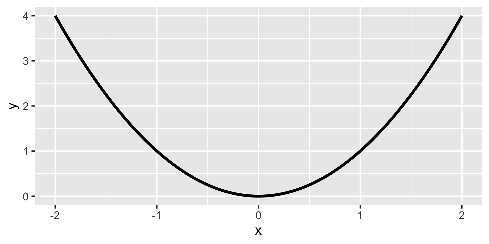
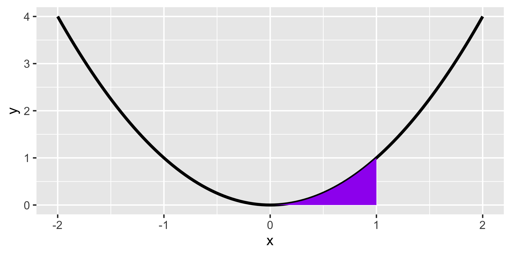
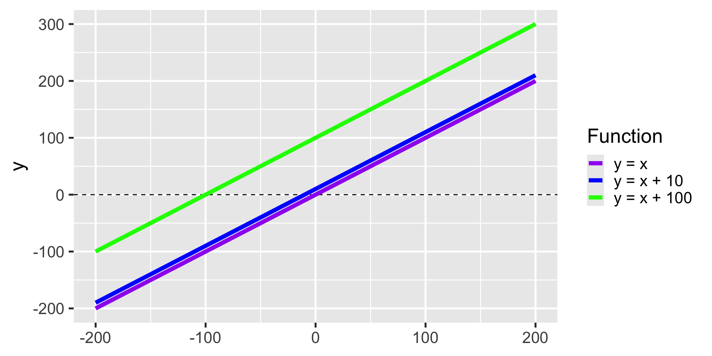

Calculus II
Last time
How to compute a derivative?
- Plug in many values into \(\frac{rise}{run}\)
- Use properties of limits
- Solve analytically
- Software
Last time
How to compute a derivative?
- Plug in many values into \(\frac{rise}{run}\)
- Use properties of limits
- Solve analytically
- Software
Today
- Wrap up derivatives
- What makes derivatives useful?
- Integrals
Higher-order derivatives
- \(f'(x)\): First derivative
- \(f''(x)\): Second derivative
- \(f'''(x)\)?
. . .
If we were driving a car:
- \(f(x)\) = distance traveled at time \(x\)
- \(f'(x)\) = speed at time \(x\)
- \(f''(x)\) = acceleration at time \(x\)
. . .
To get \(f''(x)\) just take the derivative of the output of \(f'(x)\)
Partial derivative
. . .
What happens when we have more than one variable? \(f(x,z)\)
. . .
Partial derivative
\[ \frac{\partial}{\partial_x}f(x,z) = \frac{\partial_y}{\partial_x} = \partial_x f \]
. . .
Just treat other variables as constants and calculate the derivative of the target variable (usually \(x\))
Example
\[ \begin{aligned} y = f(x,z) &= xz \\ \frac{\partial_y}{\partial_x} &= z \end{aligned} \]
. . .
Let’s try \(\displaystyle\frac{\partial (x^2y+xy^2-x)}{\partial x}\) and \(\displaystyle\frac{\partial (x^2y+xy^2-x)}{\partial y}\) together
Differentiability of functions
- Not all functions are differentiable
- We need continuous and reasonably smooth functions
- Informally: Can draw them without lifting the pen
- Formally: A function is continuous at a point \(a\) if: \(\lim_{x \to a} f(x)=f(a)\)
- Differentiable \(\to\) continuous
- Continuous \(\not\to\) differentiable
How to compute a derivative?
- Plug in many values into \(\frac{rise}{run}\)
- Use properties of limits
- Solve analytically
- Software
How to compute a derivative?
- Plug in many values into \(\frac{rise}{run}\)
- Use properties of limits
- Solve analytically
- Software
Using computers
- Symbolic differentiation: Do the math for you (WolframAlpha or Mathematica)
- Numerical differentiation: Evaluate the function at many values (
optim()in R) - Automatic differentiation: Break up functions into elementary operations and use chain rule (
torchpackage in R, various packages in Python)
Optimization
Find minimum or maximum values
Valleys are minima
Peaks are maxima
Both are extrema
Extrama can be local or global
First order condition
Minimum: Derivative is negative before and positive after
Maximum: Derivative is positive before and negative after
Extrema are critical points
First order condition helps us find them
. . .
\[FOC: f'(x)=0\]
Second order condition
. . .
FOC finds critical points, but can’t tell if minimum or maximum
. . .
Second derivative test
Start by identifying \(f''(x)\)
Substitute in the stationary points \((x^*)\) identified from the FOC
\(f''(x^*) > 0\) we have a local minimum
\(f''(x^*) < 0\) we have a local maximum
\(f''(x^*) = 0\) we (may) have an inflection point - need to calculate higher-order derivatives
Practice
Obtain FOC and SOC for \(\displaystyle y=\frac{1}{2} x^3 + 3 x^2 - 2\)
Local vs. global extrema
Extreme value theorem:
If a real-valued function is continuous on a closed and bounded (finite) interval, the function must have a global minimum and a global maximum on that interval at least once
Either at the boundaries or at one of the local extrema
Find by comparing local min/max to the value of the function at the endpoints
Could be limits as function approaches \(-\infty\) and \(+\infty\)
Practice again
Identify the global extrema of the function \(\displaystyle \frac{x^3}{3} - \frac{3}{2}x^2 -10x\) in the interval \([-6, 6]\)
Integrals
Integration
Inverse operation to the derivative
Derivative: instantaneous change at a given point
Integrals: Net effect of change of a function at a range
Area under a curve
. . .
Calculate the area under
\[ f(x) = \begin{cases} \frac{1}{3} & \text{for } x \in [0, 3] \\ 0 & \text{otherwise} \end{cases} \]
A more complicated example
\(y=x^2\)
. . .

A more complicated example
\(y=x^2\)

Two kinds of integrals
- Definite integral
- Indefinite integral
Indefinite integral
\[F(x)= \displaystyle\int f(x) \text{ } dx\]
- \(\int\) is the anti-derivative with respect to \(dx\)
- \(F(x)\) is the inverse of \(f'(x)\)
. . .
\[\displaystyle\frac{dF(x)}{dx} = f(x)\]
. . .
\[F' = f\]
Toy example
\[f(x) = 1\]
. . .
\[F'(x) = 1\]
. . .
\[F(x) = x\]
. . .
\[F(x) = x + 10\]
. . .
\[F(x) = x + 100\]
Toy example

Generalizing
For \(f(x) = F'(x) = 1\) we can write \(F(x) = x + C\)
\(C\) is the constant of integration
Finding the inverse of a derivative is called anti-differentiation
Definite integral
Indefinite integral:
\[\displaystyle\int f(x)dx\]
. . .
Definite integral:
\[\displaystyle\int_{a}^{b} f(x)dx\]
Calculating definite integrals
. . .
The first FUNDAMENTAL THEOREM OF CALCULUS
\[\displaystyle\int_{a}^{b} f(x) \text{ } dx = F(b)-F(a) = F(x)\bigg|_{a}^{b}\]
- Determine \(F(x)\)
- Substitute in \(F(b)\) and \(F(a)\)
- Calculate difference
Rules of integration
Coefficient rule: \(\displaystyle \color{gray}\int c f(x)\, \color{gray}{dx} \color{gray}= c \color{gray}\int f(x)\,\color{gray}{dx}\)
. . .
Sum/difference rule: \(\displaystyle\color{gray}\int (f(x) \pm g(x))\,\color{gray}{dx} \color{gray}= \color{gray}\int f(x)\,\color{gray}{dx} \pm \color{gray}\int g(x)\,\color{gray}{dx}\)
. . .
Constant rule: \(\displaystyle\color{gray}\int c\,\color{gray}{dx} \color{gray}= cx \color{gray}{+ C}\)
. . .
Power rule: \(\displaystyle\color{gray}\int x^n\,\color{gray}{dx} \color{gray}= \frac{x^{n+1}}{n+1} \color{gray}{+ C} \qquad \forall n \neq -1\)
. . .
Reciprocal rule:\(\displaystyle\color{gray}\int \frac{1}{x}\,\color{gray}{dx} \color{gray}= \ln(x) \color{gray}{+ C}\)
Rules of integration
Exponent and logarithm rules:
\[ \begin{aligned} \displaystyle \color{gray}\int e^x \,\color{gray}{dx} &\color{gray}= e^x\color{gray}{+C} \\ \displaystyle \color{gray}\int c^x \,\color{gray}{dx} &\color{gray}= \frac{c^x}{ln(c)}\color{gray}{+C} \end{aligned} \]
. . .
\[ \begin{aligned} \displaystyle \color{gray}\int ln(x) \,\color{gray}{dx} &\color{gray}= x \cdot ln(x) - x\color{gray}{+C} \\ \displaystyle \color{gray}\int log_c(x) \,\color{gray}{dx} &\color{gray}= \frac{x \cdot log_c(x) - x}{log_c(x)}\color{gray}{+C} \end{aligned} \]
Integration by parts
Analog to the product rule.
\[ \displaystyle \color{gray}\int f(x)g'(x)\,\color{gray}{dx} = f(x)g(x) - \color{gray}\int f'(x)g(x)\,\color{gray}{dx} \]
. . .
\[ \int u dv = uv - \int vdu \]
Integration by parts
Analog to the product rule.
\[ \displaystyle \color{gray}\int f(x)g'(x)\,\color{gray}{dx} = f(x)g(x) - \color{gray}\int f'(x)g(x)\,\color{gray}{dx} \]
\[ \int u dv = \underbrace{uv - \int vdu}_\text{"ultraviolet voodoo"} \]
Example
\[ \int x e^x dx\]
. . .
\[ \int udv = uv - \int vdu \]
. . .
\[ \color{purple}{u = x}; \text{ } \color{green}{du = 1dx}; \text{ } \color{yellow}{dv = e^xdx} ; \text{ } \color{blue}{v = e^x} \]
. . .
\[ \int \color{purple}x \color{yellow}{e^xdx}= \color{purple}x \color{blue}{e^x} - \int \color{blue}{e^x} \color{green}{(1dx)} \]
. . .
\[ = xe^x - e^x + C \]
Integration by (U-)substitution
- Have \(\displaystyle \int f(g(x))g'(x)\,dx\)
- Set \(u=g(x)\)
- Compute \(\int f(u)\,du\)
- Replace \(u\) for \(g(x)\)
Analog to the chain rule.
Example
\[ \int 4x (x^2 + 5)^3 dx \]
. . .
\[ \color{purple}{u = x2 + 5} \]
. . .
\[ \text{} \color{green}{du = 2x dx} \]
Example
\[ \int 4x (x^2 + 5)^3 dx \]
\[ \color{purple}{u = x2 + 5} \]
\[ \text{} \color{green}{du = 2x dx \Rightarrow \frac{du}{2x} = \frac{2xdx}{2x}} \]
Example
\[ \int 4x (x^2 + 5)^3 dx \]
\[ \color{purple}{u = x2 + 5} \]
\[ \text{} \color{green}{du = 2x dx \Rightarrow \frac{du}{2x} = \frac{2xdx}{2x} \Rightarrow \frac{du}{2x} = dx} \]
Replacing
\[ \int 4x \color{purple}{(x^2 + 5)}^3 \color{green}{dx} \]
. . .
\[ \int 4x \color{purple}u^3 \color{green}{\frac{du}{2x}} \]
. . .
\[ = 2 \int \color{purple}{u}^3 \color{green}{du} \]
. . .
\[ = 2 \cdot \frac{\color{purple}u}{4}^4 + C \]
Clean up and bring back \(u\)
\[ = 2 \cdot \frac{\color{purple}u}{4}^4 + C \]
. . .
\[ = \frac{1}{2} \color{purple}u^4 + C \]
. . .
\[ \frac{1}{2} \color{purple}{(x2 + 5)}^4 + C \]
Don’t worry!
We are not going to practice hard rules by hand
Practice
Solve the following definite integrals
\(\displaystyle\int_{1}^{7} x^2 \text{ } dx\)
\(\displaystyle\int_{1}^{10} 3x^2 \text{ } dx\)
\(\displaystyle\int_7^7 x\text{ } dx\)
\(\displaystyle\int_{1}^{5} 3x^2 + 2x - 7\text{ }dx\)